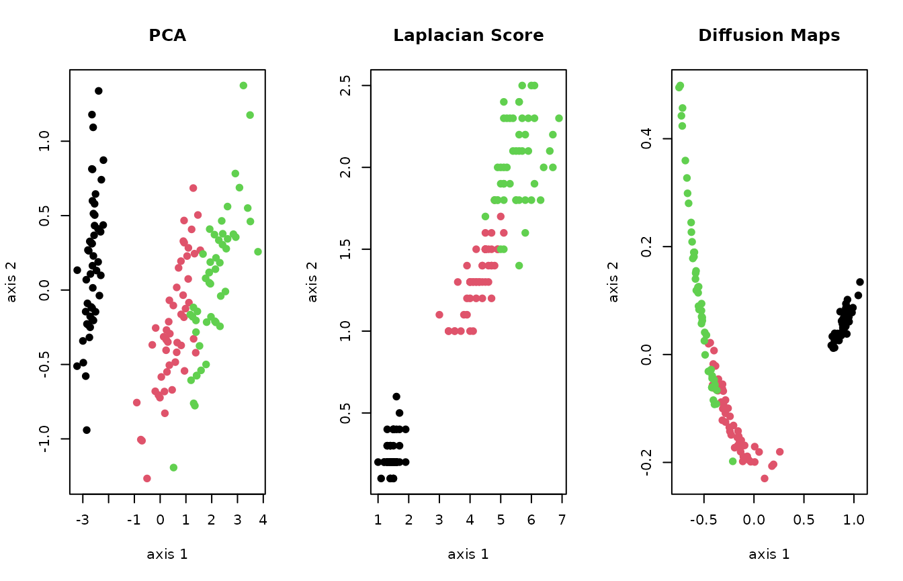

In this vignette, we will demonstrate basic functionalities of Rdimtools package by walking through from installation to analysis with the famous iris dataset.
Rdimtools can be installed in two handy options. A release version from CRAN can be installed
install.packages("Rdimtools")or a development version is available from GitHub with
devtools package.
## install.packages("devtools")
devtools::install_github("kisungyou/Rdimtools")Now we are ready to go by loading the library.
As of current release version 1.0.9, there are 17 intrinsic dimension estimation (IDE) algorithms. In the following example, we will only show 5 methods’ performance.
# load the iris data
X = as.matrix(iris[,1:4])
lab = as.factor(iris[,5])
# we will compare 5 methods (out of 17 methods from version 1.0.0)
vecd = rep(0,5)
vecd[1] = est.Ustat(X)$estdim # convergence rate of U-statistic on manifold
vecd[2] = est.correlation(X)$estdim # correlation dimension
vecd[3] = est.made(X)$estdim # manifold-adaptive dimension estimation
vecd[4] = est.mle1(X)$estdim # MLE with Poisson process
vecd[5] = est.twonn(X)$estdim # minimal neighborhood information
# let's visualize
plot(1:5, vecd, type="b", ylim=c(1.5,3.5),
main="estimating dimension of iris data",
xaxt="n",xlab="",ylab="estimated dimension")
xtick = seq(1,5,by=1)
axis(side=1, at=xtick, labels = FALSE)
text(x=xtick, par("usr")[3],
labels = c("Ustat","correlation","made","mle1","twonn"), pos=1, xpd = TRUE)As the true dimension is not known for a given dataset, different methods bring about heterogeneous estimates. That’s why we deliver 17 methods at an unprecedented scale to provide a broader basis for your decision.
Currently, Rdimtools (ver 1.0.9) delivers 144
dimension reduction/feature selection/manifold learning algorithms.
Among a myriad of methods, we compare Principal Component Analysis
(do.pca), Laplacian Score (do.lscore), and
Diffusion Maps (do.dm) are compared, each from a family of
algorithms for linear reduction, feature extraction, and nonlinear
reduction.
# run 3 algorithms mentioned above
mypca = do.pca(X, ndim=2)
mylap = do.lscore(X, ndim=2)
mydfm = do.dm(X, ndim=2, bandwidth=10)
# extract embeddings from each method
Y1 = mypca$Y
Y2 = mylap$Y
Y3 = mydfm$Y
# visualize
par(mfrow=c(1,3))
plot(Y1, pch=19, col=lab, xlab="axis 1", ylab="axis 2", main="PCA")
plot(Y2, pch=19, col=lab, xlab="axis 1", ylab="axis 2", main="Laplacian Score")
plot(Y3, pch=19, col=lab, xlab="axis 1", ylab="axis 2", main="Diffusion Maps")
As the figure above shows, in general, different algorithms show heterogeneous nature of the data. We hope Rdimtools be a valuable toolset to help practitioners and scientists discover many facets of the data.